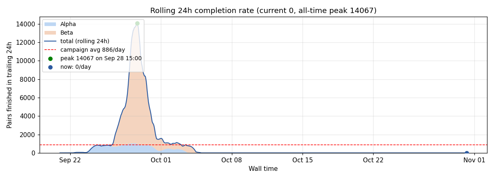
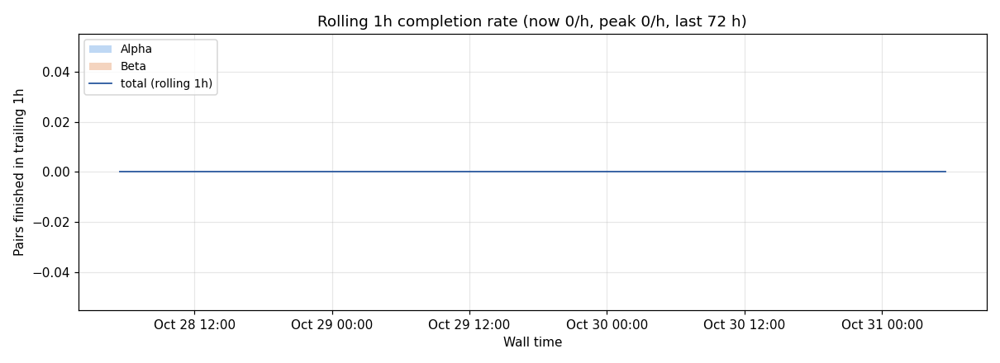
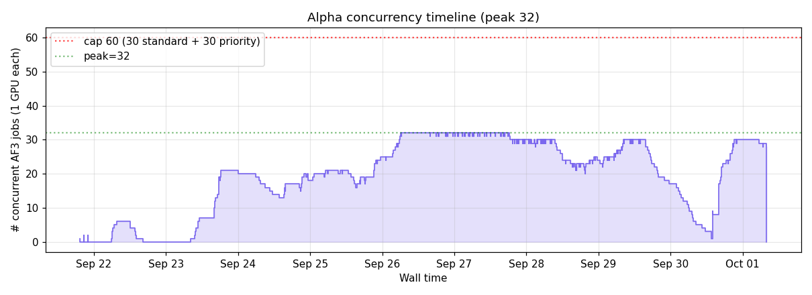
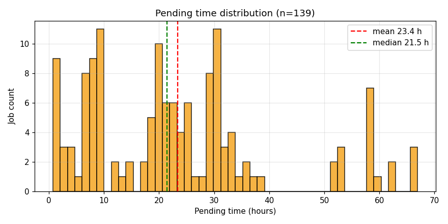
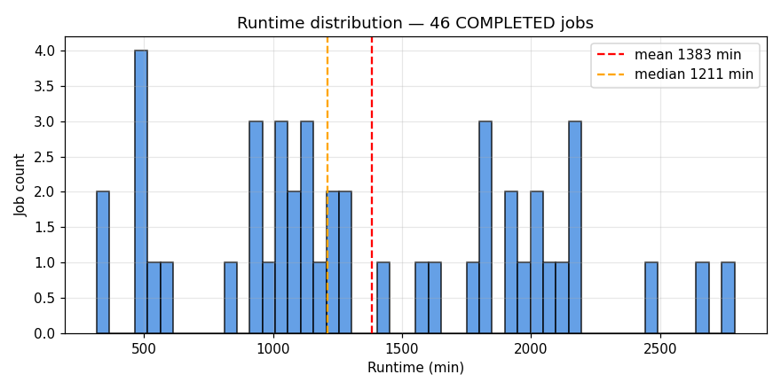

Last updated: 2026-10-31 05:35 EDT · regenerated on the cluster hourly · this page auto-reloads every 30 min
Her unfinished_pairs list, generated with her script into kamila_rerun/; pure AF3, no scoring. Submitted = sent to Beta within the current SU budget.
| Job | State | Elapsed | Left | Pairs done | Node / reason |
|---|---|---|---|---|---|
| af3_kam_001 | PENDING | 0:00 | 1-06:00:00 | 0 / 103 | pending: (Priority) |
| af3_kam_002 | PENDING | 0:00 | 1-06:00:00 | 0 / 83 | pending: (Priority) |
| af3_kam_003 | PENDING | 0:00 | 1-06:00:00 | 0 / 52 | pending: (Priority) |
| af3_kam_004 | PENDING | 0:00 | 1-06:00:00 | 0 / 52 | pending: (Priority) |
| af3_kam_005 | PENDING | 0:00 | 1-06:00:00 | 0 / 52 | pending: (Priority) |
| af3_kam_006 | PENDING | 0:00 | 1-06:00:00 | 0 / 52 | pending: (Priority) |
| af3_kam_007 | PENDING | 0:00 | 1-06:00:00 | 0 / 52 | pending: (Priority) |
| af3_kam_008 | PENDING | 0:00 | 1-06:00:00 | 0 / 52 | pending: (Priority) |
Beta snapshot 5 min old (refreshed every 10 min from the Beta login node).
| Job | State | Elapsed | Left | Pairs done | Node / reason |
|---|---|---|---|---|---|
| none | |||||
| Job | Elapsed | Left | Reason / Node |
|---|---|---|---|
| none | |||
| Job | Wait | Limit | Reason |
|---|---|---|---|
| none | |||





| State | Count |
|---|---|
| COMPLETED | 142 |
| TIMEOUT | 102 |
Generated by generate.py on the SUNY HPC cluster.
Source / regeneration policy at github.com/matvei-lukianov/af3-dashboard